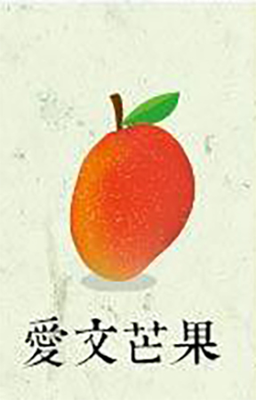
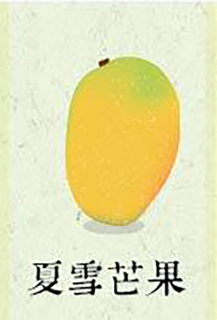
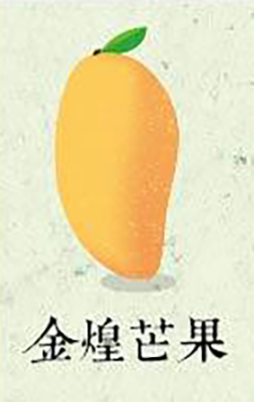
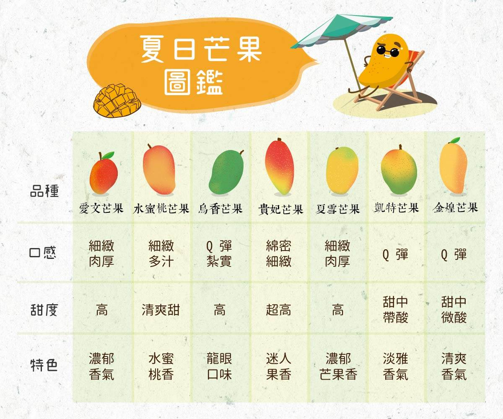

| 品種 |

|
|
|
|

|
|

|
| 口感 |
細緻肉厚 |
細緻多汁 |
Q彈紮實 |
綿密細緻 |
細緻肉厚 |
Q彈 |
Q彈 |
| 甜度 |
高 |
清爽甜 |
高 |
超高 |
高 |
甜中帶酸 |
甜中帶酸 |
| 特色 |
濃郁香氣 |
水蜜桃香 |
龍眼口味 |
迷人果香 |
濃郁芒果香 |
淡雅香氣 |
清爽香氣 |
嘉賓果(Jabuticaba)在中南美洲不只是原產的特別水果，在巴西還流傳著一個關於嘉賓果的美麗傳說。在當地方言圖皮語中，
Jabuti 是「烏龜」的意思，而 Caba 則指「地方」，
這意味著將可在果樹附近找到烏龜。相傳勇猛善戰的圖皮人祖先曾所向披靡地征服附近的部落，卻因此熱惱了女巫師，將圖皮族聰慧美麗的女子變成沒有知覺、不會講話的果樹，深情的圖皮族戰士為了守護深愛的女子，終年守在果樹旁邊，隨著時間過去，勇猛的戰士變成行動緩慢的烏龜。戰士的深情感動了天神，天神賜予果樹能結出富含營養的果實，圖皮組的祖先相信，受到天神祝福的果樹，會保佑人們的愛情順遂、長久！

嘉賓果樹成長的特色
嘉賓果最特別的地方就是「幹生花」，花與果實都是長在樹幹上的，嘉賓果開花時，整株樹幹開滿白色的小花，其壯麗不輸櫻花盛開的美景。花謝後，嘉賓果的果實就在樹幹上生長，像吹氣球一樣慢慢長大，還沒成熟時，翠綠色的果實很耀眼，但皮很厚籽很大顆；當樹葡萄慢慢成熟時，由綠轉紫，皮也慢慢變薄，籽越來越小顆，可以小到跟葡萄籽一樣，而且會非常甜。
資料來源: